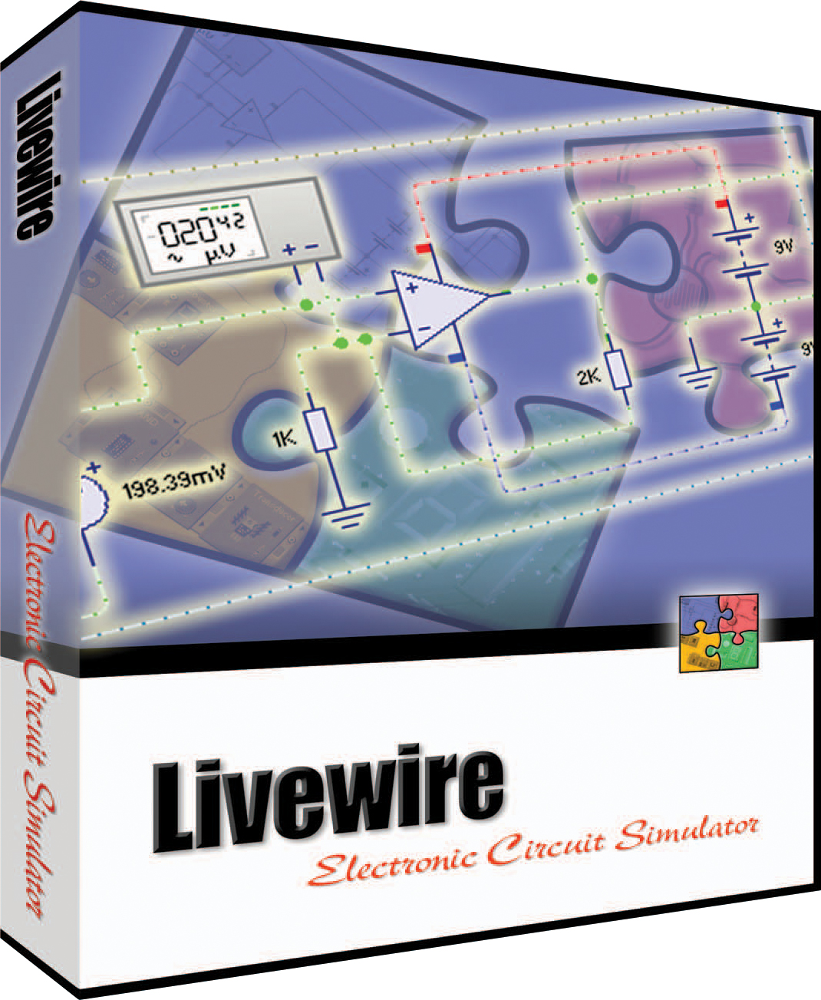

|
Adobe Dreamweaver es una aplicación en forma de estudio (basada en la forma de estudio de Adobe Flash) enfocada a la construcción y edición de sitios y aplicaciones Web basados en estándares. Dreamweaver es un software de Adobe para desarrollar y manejar sitios web tanto en sistemas operativos MAC como en Windows. Es una aplicación WYSIWIG (lo que ves es lo que obtienes, por sus siglas en inglés) que permite a los programadores que no trabajan en HTML crear fácilmente páginas y sitios a lo largo de plataformas web. Adobe Dreamweaver permite crear sitios de forma totalmente gráfica, y dispone de funciones para acceder al código HTML generado. Permite la conexión a un servidor, a base de datos, soporte para programación en ASP, PHP, Javascript, cliente FTP integrado, etc. |
|
WAMP permite servir páginas HTML a internet, además de poder gestionar datos en ellas, al mismo tiempo WAMP, proporciona lenguajes de programación para desarrollar aplicaciones Web. WAMP acrónimo usado para describir un sistema de infraestructura de internet que usa las siguientes herramientas: • Windows, como sistema operativo; • Apache, como Servidor web; • MySQL, como gestor de bases de datos; • PHP (generalmente), Perl, o Pyton, como lenguaje de programación. |
|
Proteus se compone de 4 módulos: ISIS: es el encargado de realizar el modelo esquemático del circuito, para ello cuenta con una librería de más de 6,000 dispositivos tanto analógicos como digitales. ARES: se encarga de hacer la placa de circuito impreso (PCB) además de que puede posicionar automáticamente los componentes y hacer las pistas. Prospice: tal vez el componente más importante, pues se encarga de simular el comportamiento del circuito. VSM: permite simular el comportamiento de un micro-controlador de las familias PIC, AVR, y otras, sólo le cargas el archivo HEX y Proteus lo simula, además puede interactuar con diferentes periféricos. |
|  |
Livewire es un sofisticado paquete de software creado para el diseño y simulación de circuitos electrónicos tanto analógicos como digitales. Livewire posee librerías con switchs, transistores, diodos, circuitos integrados y muchos más componentes que pueden ser interconectados para investigar el comportamiento de los circuitos electrónicos. Además, cuenta con instrumentos usuales tales como multímetro, osciloscopio, generador de palabras digitales, generador de señales, etc. Livewire no solo es capaz de simular el circuito bajo prueba, sino también por medio de otro software que trae incorporado llamado PCB Wizard es capaz de realizar la tarjeta impresa del circuito. |

|
PCB Wizard es un potente software para el diseño de circuitos impresos, ya sea, simple o doble capa. El mismo provee una buena cantidad de herramientas, incluye dibujo esquemático, conversión de esquemático a circuito impreso, posicionamiento de componentes, AutoRoute Ado de pistas y reportes de listas de materiales |
|
Tal y como se describe a si mismo QEMU en su página web, es un software capaz de trabajar como emulador (ejecutando sistemas operativos y programa realizados para trabajar en un tipo de arquitectura como ARM sobre otro tipo de arquitectura como la de nuestro PC x86 ó x86-64) o como virtualizador, al ser la arquitectura guest o invitada la misma que la arquitectura host o anfitriona, si además ejecutamos QEMU en un sistema operativo Linux usando el modulo del núcleo de KVM, el rendimiento es prácticamente el mismo que si se hubiera instalado el sistema operativo sobre la máquina sin usar virtualización. Lo primero que debemos realizar para trabajar con QEMU es descargarnos la última versión, la cual está disponible aquí si bien se recomienda usar los repositorios de paquetes de las distribuciones Linux. Actualmente la última versión disponible en la página web de QEMU es la 2.0, la misma que si instalamos desde Ubuntu. |
 |
MySQL, es un sistema de gestión de base de datos relacional o SGBD, es un sistema desarrollado originalmente en C y C++, uno de los lenguajes de programación más tradicionales y antiguos que existen. Este gestor de base de datos es multiusuario, lo que le permite ser utilizado por varias personas al mismo tiempo, e incluso, realizar varias consultas a la vez, lo que lo hace sumamente versátil. MySQL sirve para almacenar toda la información que se desee en bases de datos relacionales, como también para administrar todos estos datos sin complicaciones. MySQL almacena los datos en forma de tablas estructuradas, con campos, índices, llaves foráneas e integridad referencial en la actualización o borrado en cascada. Usa el lenguaje SQL para las diferentes transacciones de datos. |